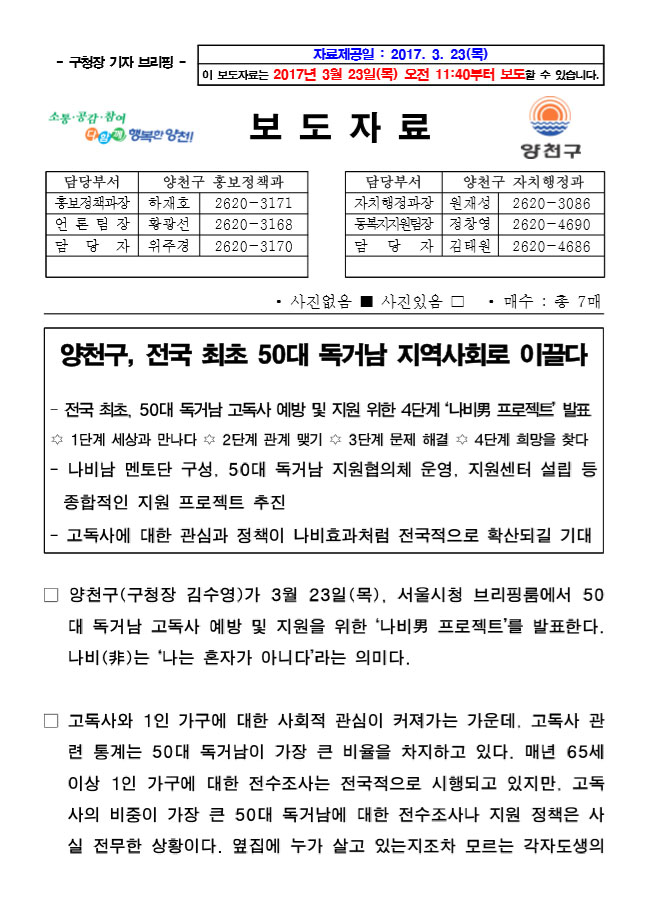
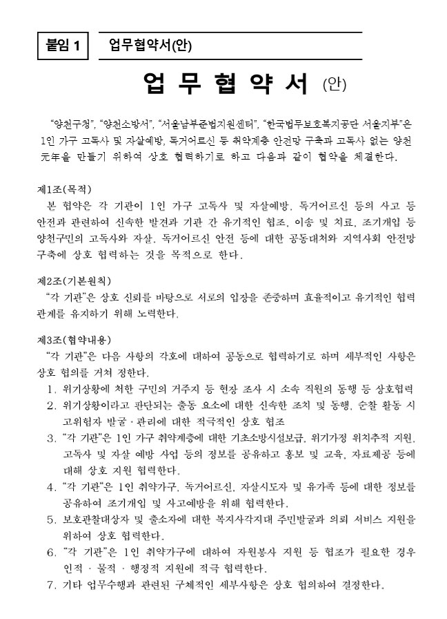
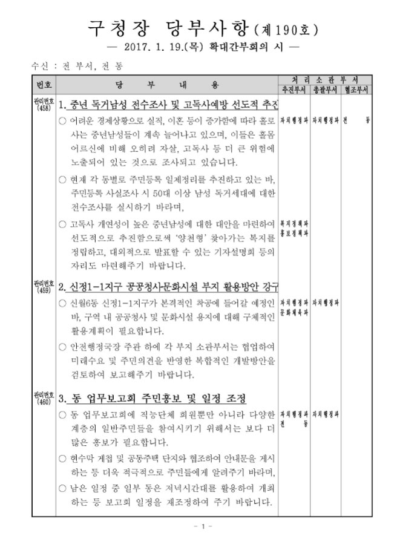
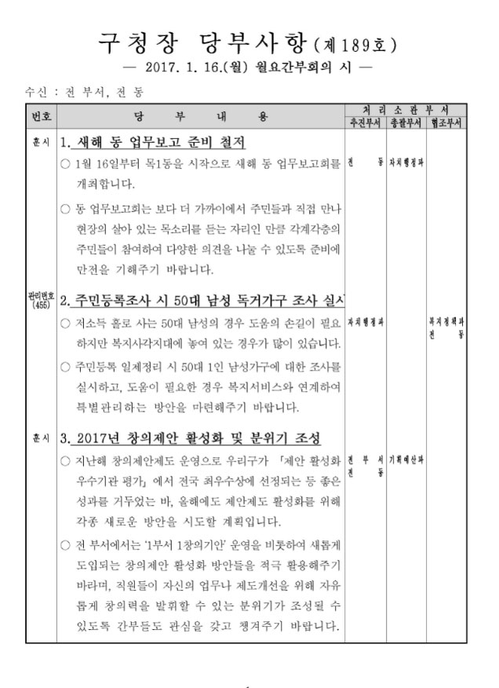
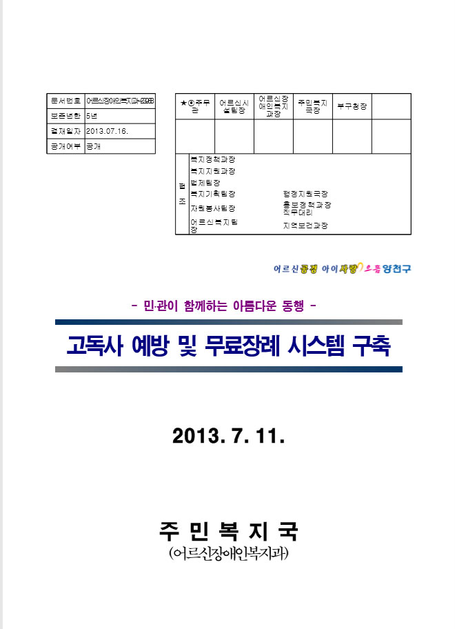

| 06 | 양천구청 | |
| 2017년 03월 23일 서울시청 나비남 프로젝트 기자설명회 브리핑 자료, 양천구 | ||
 |
05 | 양천구청 |
| 2017년 03월 23일 서울시청 나비남 프로젝트 기자설명회 보도자료, 양천구 | ||
 |
04 | 양천구청 |
| 2017년 03월 10일 고독사 예방을 위한 유관기관 업무협약 협약서, 양천구 | ||
 |
03 | 양천구청 |
| 2017년 01월 19일 구청장당부사항(제190호), 양천구 | ||
 |
02 | 양천구청 |
| 2017년 01월 16일 구청장당부사항(제189호), 양천구 | ||
 |
01 | 양천구청 |
| 2013년 07월 16일 고독사 예방 및 무료장례시스템 구축, 양천구 | ||